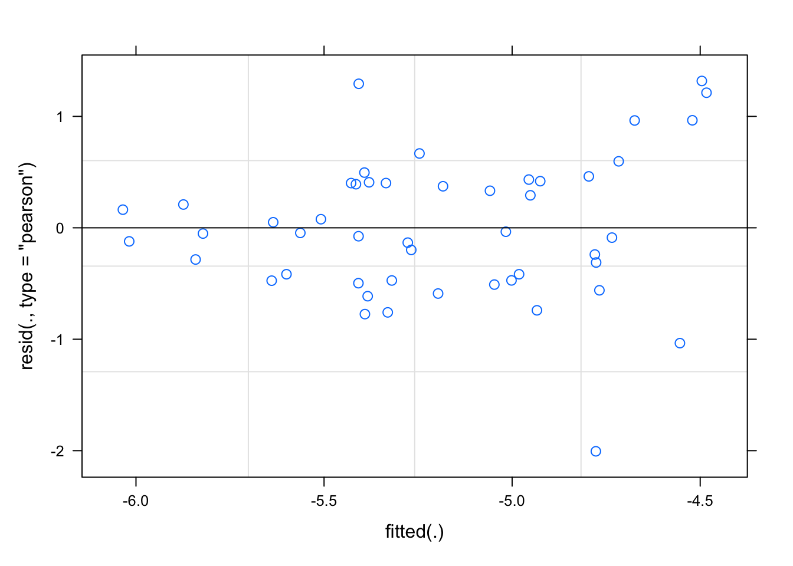
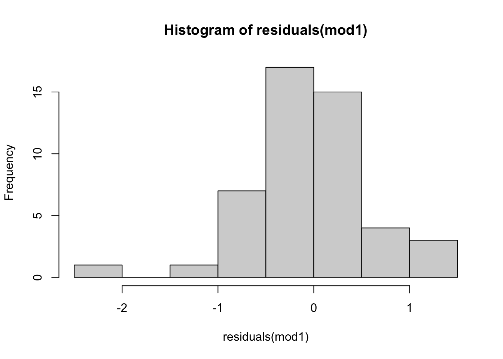

Worked Example
Caren Goldberg
1. Overview of Worked Example
a. Goals and Background
Goals: The goal of this worked example is for you to become familiar with creating and analyzing landscape genetic hypotheses using maximum likelihood population effect models (MLPE; Van Strien et al. 2012) and information theory. With this approach, we focus on evaluating evidence for the influence of the (intervening) landscape on link-based metrics (i.e. genetic distance). Incorporating node-based effects (i.e. pond size, etc.) will be covered in the gravity modeling lab.
We will re-analyze a dataset from Goldberg and Waits (2010) using a maximum likelihood population effect model (MLPE).
Here’s a map of the study area. The lines represent those pair-wise links between sampling locations that we will be considering here (graph model: Delaunay triangulation).

Map of study area
b. Data set
In previous labs, you have created genetic distance matrices, so here we are going to start with those data already complete, as are the landscape data. For MLPE, two vectors representing the nodes at the ends of each link must be created. These are already included in the data set (pop1 and pop2).
Each row in the file ‘CSF_network.csv’ represents a link between two pairs of sampling locations. The columns contain the following variables:
- Id: Link ID.
- Name: Link name (combines the two site names).
- logDc.km: Genetic distance per geographic distance, log transformed (response variable).
- LENGTH: Euclidean distance.
- slope: Average slope along the link.
- solarinso: Average solar insolation along the link.
- soils: Dominant soil type along the link (categorical).
- ag: Proportion of agriculture along the link.
- grass: Proportion of grassland along the link.
- shrub: Proportion of shrubland along the link.
- hi: Proportion of high density forest along the link.
- lo: Proportion of low density forest along the link.
- dev: Proportion of development (buildings) along the link.
- forest: Proportion of forest (the sum of hi and lo) along the link.
- pop1: ‘From’ population.
- pop2: ‘To’ population.
c. Required packages
library(LandGenCourse)
library(ggplot2)
#require(lme4)
#require(usdm)d. Import data
First, read in the dataset. It is named CSF (Columbia spotted frog) to differentiate it from the RALU dataset you have used in previous labs (same species, very different landscapes).
CSFdata <- read.csv(system.file("extdata", "CSF_network.csv",
package = "LandGenCourse"))
head(CSFdata) ## Id Name logDc.km LENGTH slope solarinso soils ag
## 1 1 CeGr to FeCr -5.664895 5449.643 11.328851 16332.75 thirteen 0.00000000
## 2 2 CeGr to FlCr -5.786712 8352.643 12.822890 16142.01 one 0.01351351
## 3 43 CeGr to Krum -5.466544 7232.601 15.852762 16208.67 one 0.00000000
## 4 3 FlCr to Krum -5.473660 6196.521 14.156965 15871.14 twelve 0.00000000
## 5 44 Krum to P37 -5.088242 4470.826 15.381000 15883.31 thirteen 0.00000000
## 6 46 CeGr to LaTr -5.997768 8766.482 9.709769 16298.75 one5 0.00000000
## grass shrub hi lo dev forest pop1 pop2
## 1 0.00000000 0.55319149 0.2553191 0.1914894 0.00000000 0.4468085 1 2
## 2 0.01351351 0.10810811 0.6216216 0.2432432 0.00000000 0.8648649 1 3
## 3 0.00000000 0.19696970 0.6212121 0.1818182 0.00000000 0.8030303 4 1
## 4 0.00000000 0.05084746 0.5932203 0.3559322 0.00000000 0.9491525 3 4
## 5 0.05000000 0.00000000 0.3250000 0.6250000 0.00000000 0.9500000 12 4
## 6 0.20000000 0.21333333 0.2666667 0.3066667 0.01333333 0.5733333 5 1Take a look at the column names and make sure you and R agree on what everything is called, and on the data types (e.g., factor vs. character).
str(CSFdata)## 'data.frame': 48 obs. of 16 variables:
## $ Id : int 1 2 43 3 44 46 4 6 7 31 ...
## $ Name : chr "CeGr to FeCr" "CeGr to FlCr" "CeGr to Krum" "FlCr to Krum" ...
## $ logDc.km : num -5.66 -5.79 -5.47 -5.47 -5.09 ...
## $ LENGTH : num 5450 8353 7233 6197 4471 ...
## $ slope : num 11.3 12.8 15.9 14.2 15.4 ...
## $ solarinso: num 16333 16142 16209 15871 15883 ...
## $ soils : chr "thirteen" "one" "one" "twelve" ...
## $ ag : num 0 0.0135 0 0 0 ...
## $ grass : num 0 0.0135 0 0 0.05 ...
## $ shrub : num 0.5532 0.1081 0.197 0.0508 0 ...
## $ hi : num 0.255 0.622 0.621 0.593 0.325 ...
## $ lo : num 0.191 0.243 0.182 0.356 0.625 ...
## $ dev : num 0 0 0 0 0 ...
## $ forest : num 0.447 0.865 0.803 0.949 0.95 ...
## $ pop1 : int 1 1 4 3 12 5 2 1 2 4 ...
## $ pop2 : int 2 3 1 4 4 1 5 6 6 7 ...Nameandsoilsare interpreted as factors,Id,pop1andpop2are vectors of integers, and- everything else is a numeric vector, i.e., continuous variable.
The response Y in our MLPE models will be logDc.km, the genetic distance per geographic distance, log transformed to meet normality assumptions. This was used in the paper as a way to include IBD as the base assumption without increasing k. The landscape variables were then also estimated so that they would not necessarily increase with increasing distance between sites (e.g., proportion of forest between sites).
This is a pruned network, where the links are only those neighbors in a Delauney trangulation. <Capture.PNG>
For this exercise, you will test 5 alternative hypotheses. At the end, you will be invited to create your own hypotheses from these variables and test support for them.
2. Fitting candidate models
a. Alternative hypotheses
In information theory, we evaluate evidence for a candidate set of hypotheses that we develop from the literature and theory. Although it is mathematically possible (and often practiced) to fit all possible combinations of input variables, that approach is not consistent with the methodology (see Burnham and Anderson 2002 Chapter 8, the reading for this unit, for more detail). Here, your “a priori”" set of hypotheses (as in the Week 12 Conceptual Exercise) is as follows:
- Full model: solarinso, forest, ag, shrub, dev
- Landcover model: ag, shrub, forest, and dev
- Human footprint model: ag, dev
- Energy conservation model: slope, shrub, dev
- Historical model: soils, slope, solarinso
b. Prepare for model fitting
Because link data are not independent (i.e. the genetic diversity at node 1 influences both the node1/node2 genetic distance and that from node1/node3, etc.), we need to develop a set of random effects to account for this dependency, so that we seperate the pattern due to this covariance from the signal of landscape influence on genetic distance. We start by creating matrices from the pop1 and pop2 variables:
Create the Zl and ZZ matrices:
Zl <- lapply(c("pop1","pop2"), function(nm)
Matrix:::fac2sparse(CSFdata[[nm]], "d", drop=FALSE))
ZZ <- Reduce("+", Zl[-1], Zl[[1]])Note: The list ‘Zl’ contains two sparse matrices, one for the ‘from’ node in ‘pop1’ and one for the ‘to’ node in ‘pop2.’ Each sparse matrix has 20 rows (for the 20 populations) and 48 columns (for the 48 links). Each column has a single value of ‘1’ that indicates the ‘from’ or ‘to’ population of the corresponding link. The matrix ‘ZZ’ is again a sparse matrix that is the sum of the two sparse matrices in ‘Zl.’ Each column thus has two values of ‘1,’ one for the ‘from’ and one for the ‘to’ node.
Now we can fit an lmer model (linear mixed model; see Week 6 videos) to the data.
mod1 <- lme4::lFormula(logDc.km ~ solarinso + forest + ag + shrub +
dev + (1|pop1), data = CSFdata, REML = TRUE)## Warning: Some predictor variables are on very different scales: consider
## rescalingAt this point an error message appears: “Warning message: Some predictor variables are on very different scales: consider rescaling.”
Which variable is causing this problem? To check, get R to show you the first few rows of the dataset:
head(CSFdata)## Id Name logDc.km LENGTH slope solarinso soils ag
## 1 1 CeGr to FeCr -5.664895 5449.643 11.328851 16332.75 thirteen 0.00000000
## 2 2 CeGr to FlCr -5.786712 8352.643 12.822890 16142.01 one 0.01351351
## 3 43 CeGr to Krum -5.466544 7232.601 15.852762 16208.67 one 0.00000000
## 4 3 FlCr to Krum -5.473660 6196.521 14.156965 15871.14 twelve 0.00000000
## 5 44 Krum to P37 -5.088242 4470.826 15.381000 15883.31 thirteen 0.00000000
## 6 46 CeGr to LaTr -5.997768 8766.482 9.709769 16298.75 one5 0.00000000
## grass shrub hi lo dev forest pop1 pop2
## 1 0.00000000 0.55319149 0.2553191 0.1914894 0.00000000 0.4468085 1 2
## 2 0.01351351 0.10810811 0.6216216 0.2432432 0.00000000 0.8648649 1 3
## 3 0.00000000 0.19696970 0.6212121 0.1818182 0.00000000 0.8030303 4 1
## 4 0.00000000 0.05084746 0.5932203 0.3559322 0.00000000 0.9491525 3 4
## 5 0.05000000 0.00000000 0.3250000 0.6250000 0.00000000 0.9500000 12 4
## 6 0.20000000 0.21333333 0.2666667 0.3066667 0.01333333 0.5733333 5 1One of these variables is a lot larger than the others, but has a small range. This often happens with variables such as easting and can cause issues for model fit. The common solution is to z-transform (standardize) the data, which is conveniently done in R using the scale function.
Note: we could use the scale function without specifying the arguments ‘center’ or ‘scale,’ as both are ‘TRUE’ by default. The argument ‘center=TRUE’ centers the variable by subtracting the mean, the ‘scale=TRUE’ argument rescales the variables to unit variance by dividing each value by the standard deviation. The resulting variable has a mean of zero and a standard deviation and variance of one.
solarinsoz <- scale(CSFdata$solarinso, center=TRUE, scale=TRUE)We then can attach these data back to our dataframe and check to make sure this worked:
CSFdata <- cbind(CSFdata, solarinsoz)
names(CSFdata)## [1] "Id" "Name" "logDc.km" "LENGTH" "slope"
## [6] "solarinso" "soils" "ag" "grass" "shrub"
## [11] "hi" "lo" "dev" "forest" "pop1"
## [16] "pop2" "solarinsoz"If solarinsoz is there, you are good.
While we are at it, we will make sure that these variables do not have issues with multicollinearity.
Make a dataframe of just the variables to test (note, you cannot use factors here):
CSF.df <- with(CSFdata, data.frame(solarinsoz, forest, dev, shrub, ag))
usdm::vif(CSF.df)## Variables VIF
## 1 solarinsoz 1.479273
## 2 forest 3.127104
## 3 dev 1.800218
## 4 shrub 1.523341
## 5 ag 2.532198If you get an error that there is no package called ‘usdm,’ use install.packages(“usdm”)
Numbers less than 10, or 3, or 4, depending on who you ask, are considered to not be collinear enough to affect model outcomes. So we are good to go here. What would happen if we added grass to this?
usdm::vif(cbind(CSF.df, grass=CSFdata$grass))## Variables VIF
## 1 solarinsoz 1.541954
## 2 forest 97.167730
## 3 dev 55.768172
## 4 shrub 11.657666
## 5 ag 68.852254
## 6 grass 45.970721Question 1: Why would adding in the last land cover cause a high amount of collinearity? Consider how these data were calculated.
The variables ‘forest,’ ‘dev,’ ‘shrub,’ ‘ag’ and ‘grass’ together cover almost all land cover types in the study area. Each is measured as percent area, and together, they make up 100% or close to 100% of the land cover types along each link. Thus if we know e.g. that all ‘forest,’ ‘dev,’ ‘shrub’ and ‘ag’ together cover 80% along a link, then it is a good bet that ‘grass’ will cover the remaining 20%.
With such sets of compositional data, we need to omit one variable to avoid multi-collinearity (where a variable is a linear combination of other variables), even though the pairwise correlations may be low. For example, there the variable ‘grass’ showed relatively low correlations with the other variables:
cor(CSF.df, CSFdata$grass)## [,1]
## solarinsoz 0.10394523
## forest -0.41341968
## dev -0.23617929
## shrub -0.29807027
## ag 0.01060842c. Fit all five models
Now we have to remake the modeling objects with our new and improved data frame, but referring to our z-transformed data (thanks to Martin Van Strien and Helene Wagner for the base model code):
Zl <- lapply(c("pop1","pop2"), function(nm)
Matrix:::fac2sparse(CSFdata[[nm]], "d", drop=FALSE))
ZZ <- Reduce("+", Zl[-1], Zl[[1]])Fit an lmer model to the data:
mod_1 <- lme4::lFormula(logDc.km ~ solarinsoz + forest + ag + shrub +
dev + (1|pop1), data = CSFdata, REML = TRUE)In the fitted model replace Zt slot (matrix for the random effects generated with just pop1) with the ZZ matrix created above:
mod_1$reTrms$Zt <- ZZRefit the model (this involves a few steps of optimization starting from the previously fitted model mod_1):
dfun <- do.call(lme4::mkLmerDevfun, mod_1)
opt <- lme4::optimizeLmer(dfun)
mod1 <- lme4::mkMerMod(environment(dfun), opt, mod_1$reTrms, fr = mod_1$fr)
summary(mod1)## Linear mixed model fit by REML ['lmerMod']
##
## REML criterion at convergence: 101.9
##
## Scaled residuals:
## Min 1Q Median 3Q Max
## -2.86045 -0.67339 -0.06932 0.57516 1.87959
##
## Random effects:
## Groups Name Variance Std.Dev.
## pop1 (Intercept) 0.02986 0.1728
## Residual 0.49166 0.7012
## Number of obs: 48, groups: pop1, 20
##
## Fixed effects:
## Estimate Std. Error t value
## (Intercept) -4.681159 0.383071 -12.220
## solarinsoz -0.001611 0.135868 -0.012
## forest -0.163231 0.591137 -0.276
## ag -1.504031 0.642904 -2.339
## shrub -1.903160 1.343940 -1.416
## dev 0.176494 0.652835 0.270
##
## Correlation of Fixed Effects:
## (Intr) slrnsz forest ag shrub
## solarinsoz -0.088
## forest -0.802 0.360
## ag -0.848 -0.020 0.626
## shrub -0.237 -0.384 -0.121 0.259
## dev -0.691 -0.020 0.533 0.551 0.195In this output, we focus on the estimates of fixed effects, which we will use later to examine the effect of each variable. Note that there are no p-values because of the nature of these models and the philosophy of the package writers. There are packages available that calculate these but the results may be misleading. This is the closest to a full model in our dataset (although our models are not completely nested), so we will take a look at the residuals:
plot(mod1) 
Residuals are centered around zero and do not show large groupings or patterns, although there is some increase in variation at larger numbers (so the model is having a more difficult time predicting larger genetic distances per km). We will keep that in mind as we move on.
Next we will check to make sure the residuals are normally distributed.
hist(residuals(mod1)) 
This can also be done with the qqmath function in package lattice if you are more used to seeing qq plots. These residuals look okay so we will move on (but if this were a publication we would do a closer examination of the shape of the data at the ends of the distribution).
Now we will make a function (called MLPE) to fit the rest of our models, so that we are not typing the same code over and over (which causes errors and long code that is difficult to navigate or update):
MLPE <- function(variables, data) {
mod2 <- lme4::lFormula(variables, data = data, REML = TRUE)
dfun <- do.call(lme4::mkLmerDevfun, mod2)
opt <- lme4::optimizeLmer(dfun)
mod_2 <- lme4::mkMerMod(environment(dfun), opt, mod2$reTrms,fr = mod2$fr)
mod2$reTrms$Zt <- ZZ
# Refit the model
dfun <- do.call(lme4::mkLmerDevfun, mod2)
opt <- lme4::optimizeLmer(dfun)
modelout <- lme4::mkMerMod(environment(dfun), opt, mod2$reTrms,fr = mod2$fr)
return(modelout)
}To use this function, we define variables (the model as we want it to run) and data (the object that contains our data).
mod2 <- MLPE(logDc.km ~ forest + ag + shrub + dev + (1|pop1), CSFdata)
mod3 <- MLPE(logDc.km ~ ag + dev + (1|pop1), CSFdata)
mod4 <- MLPE(logDc.km ~ slope + shrub + dev + (1|pop1), CSFdata)
mod5 <- MLPE(logDc.km ~ soils + slope + solarinsoz + (1|pop1), CSFdata)d. Compare evidence for models
First we need to refit the models with REML = FALSE to get a useable estimate of likelihood for AIC and BIC. To do this, we’ll create a new function called MLPEnoREML and use it to fit our 5 models.
MLPEnoREML <- function(variables, data) {
mod2 <- lme4::lFormula(variables, data = data, REML = FALSE)
dfun <- do.call(lme4::mkLmerDevfun, mod2)
opt <- lme4::optimizeLmer(dfun)
mod_2 <- lme4::mkMerMod(environment(dfun), opt, mod2$reTrms,fr = mod2$fr)
mod2$reTrms$Zt <- ZZ
# Refit the model
dfun <- do.call(lme4::mkLmerDevfun, mod2)
opt <- lme4::optimizeLmer(dfun)
modelout <- lme4::mkMerMod(environment(dfun), opt, mod2$reTrms,fr = mod2$fr)
return(modelout)
}mod1noREML <- MLPEnoREML (logDc.km ~ solarinsoz + forest + ag + shrub + dev + (1|pop1), CSFdata)
mod2noREML <- MLPEnoREML(logDc.km ~ forest + ag + shrub + dev + (1|pop1), CSFdata)
mod3noREML <- MLPEnoREML(logDc.km ~ ag + dev + (1|pop1), CSFdata)
mod4noREML <- MLPEnoREML(logDc.km ~ slope + shrub + dev + (1|pop1), CSFdata)
mod5noREML <- MLPEnoREML(logDc.km ~ soils + slope + solarinsoz + (1|pop1), CSFdata)In information theory, we use information criteria (AIC, BIC) to evaluate the relative distance of our hypothesis from truth. For more information, see Burnham and Anderson (2002).
Note: package MuMIn will do this for you, but for this exercise it is useful to see all the pieces of what goes into your evaluation.
Models <- list(Full=mod1noREML, Landcover=mod2noREML, HumanFootprint=mod3noREML,
EnergyConservation=mod4noREML, Historical=mod5noREML)
CSF.IC <- data.frame(AIC = sapply(Models, AIC),
BIC = sapply(Models, BIC))
CSF.IC## AIC BIC
## Full 115.9620 130.9316
## Landcover 113.9757 127.0742
## HumanFootprint 113.4053 122.7613
## EnergyConservation 114.4910 125.7182
## Historical 122.4089 137.3785We now have some results, great!
Now we will work with these a bit. First, because we do not have an infinite number of samples, we will convert AIC to AICc (which adds a small-sample correction to AIC).
First, find the k parameters used in the model and add them to the table.
CSF.IC <- data.frame(CSF.IC, k = sapply(Models, function(ls) attr(logLik(ls), "df")))
CSF.IC## AIC BIC k
## Full 115.9620 130.9316 8
## Landcover 113.9757 127.0742 7
## HumanFootprint 113.4053 122.7613 5
## EnergyConservation 114.4910 125.7182 6
## Historical 122.4089 137.3785 8Question 2: How does k relate to the number of parameters in each model?
Now, calculate AICc and add it to the dataframe:
CSF.IC$AICc <- CSF.IC$AIC + 2*CSF.IC$k*(CSF.IC$k+1)/(48-CSF.IC$k-1)
CSF.IC## AIC BIC k AICc
## Full 115.9620 130.9316 8 119.6543
## Landcover 113.9757 127.0742 7 116.7757
## HumanFootprint 113.4053 122.7613 5 114.8339
## EnergyConservation 114.4910 125.7182 6 116.5398
## Historical 122.4089 137.3785 8 126.1012e. Calculate evidence weights
Next we calculate evidence weights for each model based on AICc and BIC. These can be interpreted as the probability that the model is the closest to truth in the candidate model set.
Calculate model weights for AICc:
AICcmin <- min(CSF.IC$AICc)
RL <- exp(-0.5*(CSF.IC$AICc - AICcmin))
sumRL <- sum(RL)
CSF.IC$AICcmin <- RL/sumRLCalculate model weights for BIC:
BICmin <- min(CSF.IC$BIC)
RL.B <- exp(-0.5*(CSF.IC$BIC - BICmin))
sumRL.B <- sum(RL.B)
CSF.IC$BICew <- RL.B/sumRL.B
round(CSF.IC,3)## AIC BIC k AICc AICcmin BICew
## Full 115.962 130.932 8 119.654 0.047 0.012
## Landcover 113.976 127.074 7 116.776 0.200 0.085
## HumanFootprint 113.405 122.761 5 114.834 0.527 0.735
## EnergyConservation 114.491 125.718 6 116.540 0.224 0.167
## Historical 122.409 137.378 8 126.101 0.002 0.000Question 3: What did using AICc (rather than AIC) do to inference from these results?
In the multi-model inference approach, we can look across all the models in the dataset and their evidence weights to better understand the system. Here we see that models 1 and 5 have very little evidence of being close to the truth, that models 2 and 4 have more, and that model 3 has the most evidence of being the closest to truth, although how much more evidence there is for model 3 over 2 and 4 depends on which criterion you are looking at. BIC imposes a larger penalty for additional parameters, so it has a larger distinction between these. Let’s review what these models are:
- Full model: solarinso, forest, ag, shrub, dev
- Landcover model: ag, shrub, forest, and dev
- Human footprint model: ag, dev
- Energy conservation model: slope, shrub, dev
- Historical model: soils, slope, solarinso
f. Confidence intervals for predictors
According to Row et al. (2017), we can use the confidence interval from the variables in the models to identify those that are contributing to landscape resistance. Looking at models 2 and 3, we have some evidence that shrub and forest cover matter, but it’s not as strong as the evidence for ag and development. Let’s look at the parameter estimates to understand more. Note that for parameter estimation we use the REML estimates.
ModelsREML <- list(Full=mod1, Landcover=mod2, HumanFootprint=mod3,
EnergyConservation=mod4, Historical=mod5)Now we’ll estimate the 95% confidence interval for these estimates:
confint(ModelsREML$Landcover, level = 0.95, method = "Wald")## 2.5 % 97.5 %
## .sig01 NA NA
## .sigma NA NA
## (Intercept) -5.412493 -3.9372219
## forest -1.234535 0.8980823
## ag -2.767849 -0.2789161
## shrub -4.335188 0.4391626
## dev -1.077595 1.4292392confint(ModelsREML$HumanFootprint, level = 0.95, method = "Wald")## 2.5 % 97.5 %
## .sig01 NA NA
## .sigma NA NA
## (Intercept) -5.3193590 -4.5159303
## ag -2.0215023 -0.1997056
## dev -0.6843463 1.5082812confint(ModelsREML$EnergyConservation, level = 0.95, method = "Wald")## 2.5 % 97.5 %
## .sig01 NA NA
## .sigma NA NA
## (Intercept) -6.83962996 -5.3057702
## slope 0.02028322 0.1725869
## shrub -3.83624990 1.0650554
## dev 0.22109749 2.6485991In essence, we use the confidence intervals to assess whether we can differentiate the effect of each variable from zero (i.e. statistical significance). The confidence intervals that overlap 0 do not have as much evidence of being important to gene flow, based on simulations in Row et al. (2017). So in this case, there is strong evidence that agriculture influences the rate of gene flow. Note that because the metric is genetic distance, negative values indicate more gene flow.
Question 4: What evidence is there that shrub and forest matter to gene flow from these analyses? What about slope? Would you include them in a conclusion about landscape resistance in this system?
Question 5: What evidence is there that development influences gene flow from these analyses? Would you include it in a conclusion about landscape resistance in this system?
Question 6: We excluded grass from our models because of multicollinearity. How could we investigate the importance of this variable?
3. Your turn to test additional hypotheses!
Create your own (small) set of hypotheses to rank for evidence using the dataset provided. Modify the code above to complete the following steps:
- Define your hypotheses.
- Calculate the VIF table for full model.
- Make a residual plot for full model.
- Create table of AICc and BIC weights.
- Create confidence intervals from models with high evidence weights.
What can you infer from your analysis about what influences gene flow of this species?
4. References
Burnham KP and DR Anderson. 2002. Model Selection and Multimodel Inference: A Practical Information Theoretic Approach. Chapter 8, p. 437-454. Springer-Verlag, New York.
Goldberg CS and LP Waits (2010). Comparative landscape genetics of two pond-breeding amphibian species in a highly modified agricultural landscape. Molecular Ecology 19: 3650-3663.
Row JR, ST Knick, SJ Oyler-McCance, SC Lougheed and BC Fedy (2017). Developing approaches for linear mixed modeling in landscape genetics through landscape-directed dispersal simulations. Ecology & Evolution 7: 3751–3761.
Van Strien MJ, D Keller and R Holderegger (2012). A new analytical approach to landscape genetic modelling: least‐cost transect analysis and linear mixed models. Molecular Ecology 21: 4010-4023.